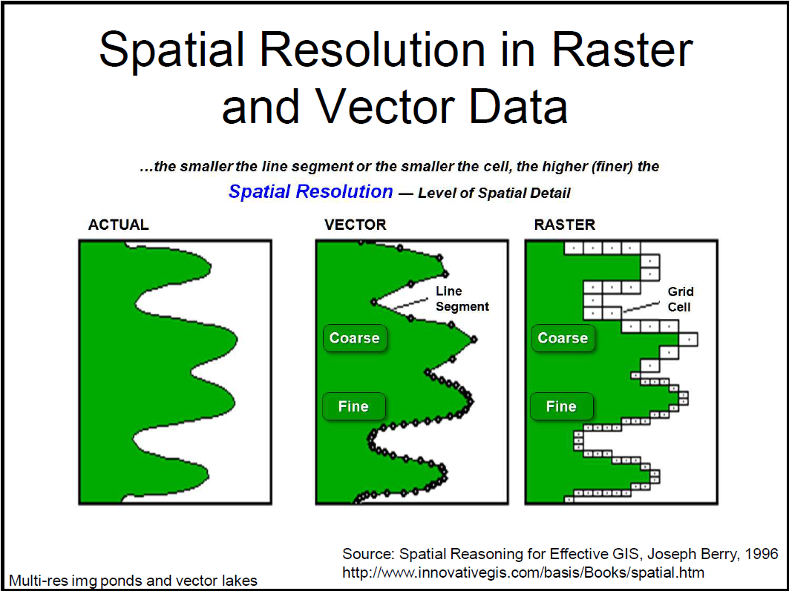
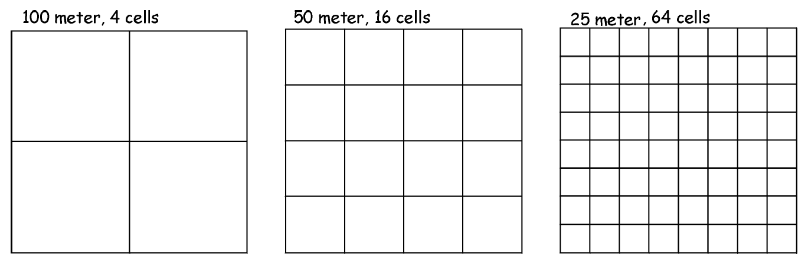

Concepts of Scale and Resolution
Essential concepts for scale and resolution.
Learning Objectives
To define scale and resolution, understand the importance in their difference, and the impact of scale and resolution on measurements and analysis in a GIS.
Map Scale
Definitions:
- amount of reduction in the representation of a real world phenomenon on a map
- ratio between map distance and real world distance
- unitliess ratio: 1/100,000 or 1:100,000
- unti ratio: 2 inches to 10 miles
Scale Sizes (Large vs. Small)
Large Scale vs. Small Scale
Large Scale Maps
- larger features
- more detail
- less area
- tending towards less geometric error
Small Scale Maps
- smaller features
- less detail
- more area
- tending towards more geometric error
Explanation
Comparing Scales:
Map A Scale: \(1/a\)
Map B Scale: \(1/b\)
Larger the Denominator \(\rightarrow\) Smaller the Scale
Smaller the Denominator \(\rightarrow\) Larger the Scale
So, provided \(a > b \rightarrow 1/a < 1/b\), thus
Map A has a smaller scale than Map B
Map B has a larger scale than Map A
Example: Map A could cover Washington state whereas Map B could cover a city in Washington state
Further Explanation: The smaller the relative scale, the closer the map to reality
Map Resolution
There are two main components with resolution:
- resolution: smallest spatial addressable unit
- raster data: cell size
- vector data: line segment
- detection: smallest detectable feature

Raster - The Mixed Pixel Problem / Effect
How do we define/classify a cell (i.e. land vs. water)?
Rule of Thumb: the smallest detectable feature is about twice as large as the resolution, or stated in another manner, detection requires resolution at least twice as fine as detectable features.
So if we were going to detect a defined bodies of water, the bodies of water we wish to detect were around size \(x\), the resolution must be at most \(x/2\). This ensures that the features of interest are adequately captured and distinguished from surrounding features.
Tradeoff Between Storage and Resolution
As the saying goes, easier said than done. Images with finer resolution require more storage and are usually more expensive (technology / equipment).
In fact, decreasing the cell size by one half quadruples the resolution, thus storage space is quadrupled.

Note that in the case of vector data, finer resolution vector data has more points and points closer together. In other words, more vertices!
Scale vs. Resolution
- In (paper) maps, data resolution is tied to scale
- An example is road networks in paper maps. Given a large scale paper map, what is the smallest addressable unit of a linear object that should be shown?
Digital Data and Scale
DIGITAL DATA HAS A SCALE! HOWEVER, CAUTION IS REQUIRED.
The input map / data layer had a scale (source scale), but many data today does not come from maps. This allows us to slide through a range of scales on the screen. Think about the increasing detail level while zooming in on Google Maps.
This gives us the Display Scale, the ratio between ground and on-screen scale.